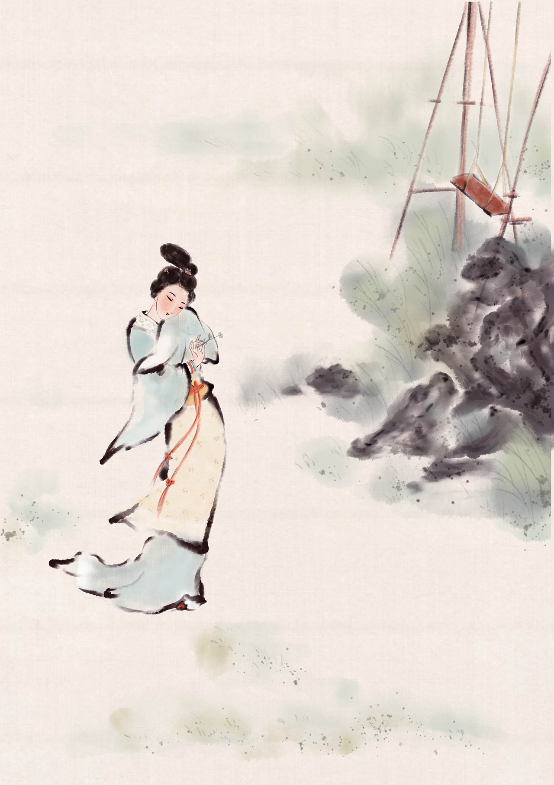

词

别称：长短句
萌芽于南朝
盛行于宋
词
始于南梁，形成于唐代，五代十国后开始兴盛，至宋代达到顶峰。词在形式上的特点是“调有定格，
句有阕。”据《旧唐书》上记载；“自开元（唐玄宗年号）以来，歌者杂用胡夷里巷之曲。”由于音乐
的广泛流传；当时的都市里有很多以演唱为生的优伶乐师，根据唱词和音乐拍节配合的需要，创作
或改编出一些长短句参差的曲词，这便是最早的词了。从敦煌曲子词中也能够看出，民间产生的词比
出自文人之笔的词要早几十年。
唐代，民间的词大都是反映爱情相思之类的题材，所以它在文人眼里是不登大雅之堂的，被视为诗余小令。
只有注重汲取民歌艺术长处的人，如白居易、刘禹锡等人才写一些词，具有朴素自然的风格，洋溢着浓厚的
生活气息。以脂粉气浓烈的崇尚浓辞艳句而驰名的温庭筠和五代“花间派”。温庭筠，文学史上第一个大力填
词的作家，存世约七十首。题材狭窄，以绮闺阁为主，开词为艳科的先河。风格绮丽婉约。在词发展史上有
一定的位置。而南唐李后主被俘虏之后的词作则开拓一个新的深沉的艺术境界，给后世词客以强烈的感染。
定风波
作责：苏轼
定风波·南海归赠王定国侍人寓娘
王定国歌儿曰柔奴，姓宇文氏，眉目娟丽，善应对，家世住京师。
定国南迁归，余问柔：“广南风土， 应是不好？”柔对曰：“此心安处，便是吾乡。”因缀词云。
常羡人间琢玉郎，天应乞与点酥娘。尽道清歌传皓齿，风起，雪飞炎海变清凉。
万里归来颜愈少。微笑，笑时犹带岭梅香。试问岭南应不好，却道：此心安处是吾乡。
赏析：
这首词不仅刻画了歌女柔奴的姿容和才艺，而且着重歌颂了她的美好情操和高洁人品。
柔中带刚，情理交融，空灵清旷，细腻柔婉，是这首词的风格所在。
上片总写柔奴的外在美，开篇“常羡人间琢玉郎，天教分付点酥娘”，描绘柔奴的天生
丽质、晶莹俊秀，使读者对她的外貌有了一个比较完整、真切而又寓于质感的印象。
下片通过写柔奴的北归，刻画其内在美。换头承上启下，先勾勒她的神态容貌：
“万里归来颜愈少。”岭南艰苦的生活她甘之如饴，心情舒畅，归来后容光焕发，
更显年轻。“笑时犹带岭梅香”，表现出浓郁的诗情，既写出了她北归时经过大庾岭的情况，又以斗霜傲雪的岭梅喻人，赞美柔奴克
服困难的坚强意志，为下边她的答话作了铺垫。最后写到词人和她的问答。先以否定语气提问：
“试问岭南应不好？”“却道”陡转，使答语“此心安处是吾乡”更显铿锵有力，警策隽永。
唐多令·惜别
作者：吴文英
唐多令·惜别
何处合成愁。离人心上秋。纵芭蕉、不雨也飕飕。都道晚凉天气好，有明月、怕登楼。
年事梦中休。花空烟水流。燕辞归、客尚淹留。垂柳不萦裙带住。漫长是、系行舟。
赏析:
“何处合成愁？离人心上秋。”两句一问一答，开篇即出以唱叹，而且凿空道来，实可称倒折之笔。
下句“纵芭蕉不雨也飕飕”是说，虽然没有下雨，但芭蕉也会因飕飕秋风，发出凄凉的声响。这分明
想告诉读者，先时有过雨来。而起首愁生何处的问题，正由此处蕉雨惹起。所以前二句即由此倒折
出来，平添千回百折之感。秋雨初停，天凉如水，明月东升，正是登楼纳凉赏月的好时候。
“都道晚凉天气好”，可谓人云亦云，而“有明月，怕登楼”，才是客子真实独特的心理写照。“月是故乡明”，
望月是难免会触动乡思离愁的。这三句没有直说愁，却通过客子心口不一的描写把它充分地表现了。
秋属岁未，颇容易使人联想到晚岁。过片就叹息年光过尽，往事如梦。“花空烟水流”是比喻青春岁月的流逝，
又是赋写秋景，兼有二义之妙。由此可见客子是长期飘泊在外，老大未回之人。看到燕子辞巢而去，心生无限
感慨。“燕辞归”与“客尚淹留”，两相对照，自可见人不如候鸟。以上蕉雨、明月、落花、流水、去燕……虽无非
秋景，而又不是一般的秋景，于中无往而非客愁，这也就是“离人心上秋”的具体形象化了。